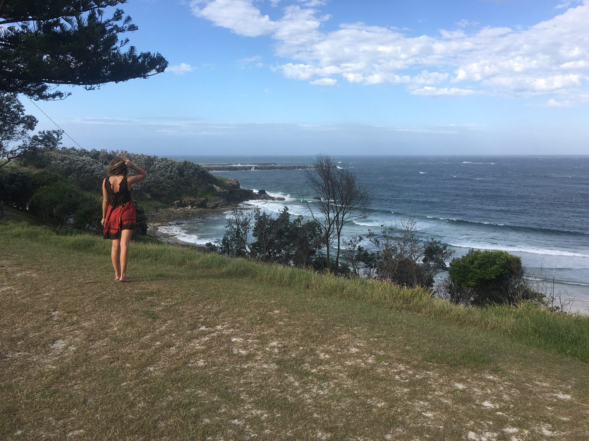
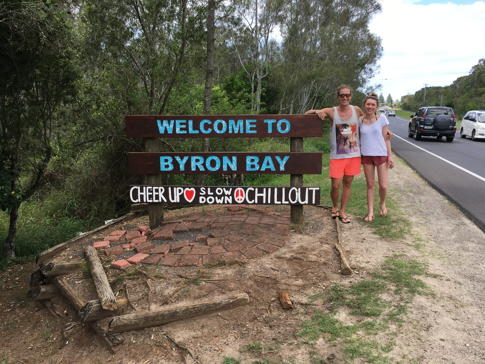
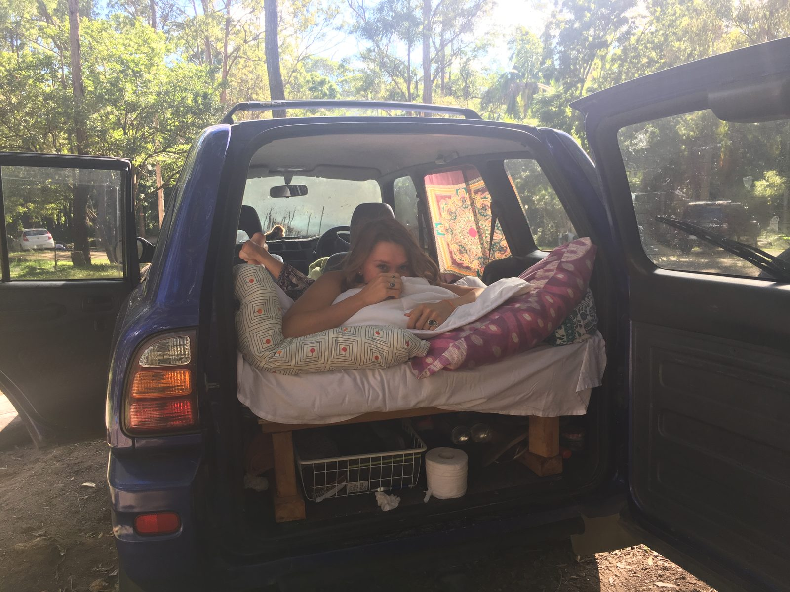
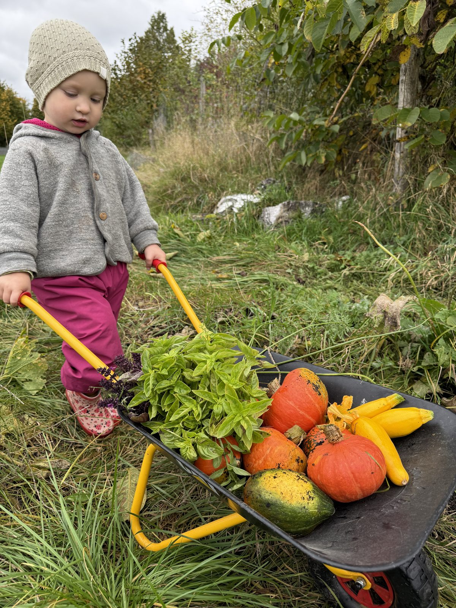
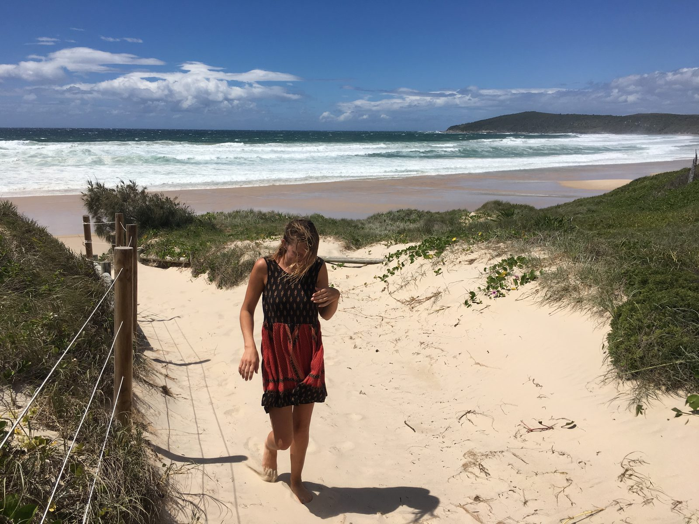

Wir wandern im Sommer 2026 nach Australien aus, als Familie mit zwei Kindern. Die Frage, die wir am häufigsten hören, ist nicht wie oder wohin. Sie lautet: Warum tut ihr euch das an? Dieser Artikel ist die ehrliche Antwort. Wie diese Entscheidung wirklich gefallen ist. Nicht an einem großen Tag mit Trommelwirbel, sondern über Jahre, mit Zweifeln, einem Tiefpunkt und einem Satz, den ich irgendwann zu Lucy gesagt habe. Das ist keine Anleitung und kein Mutmach-Text. Es ist unsere Geschichte, für alle, die selbst gerade vor so einer Entscheidung stehen.
- Die Entscheidung fiel nicht an einem Tag. Australien war über Jahre ein leiser Wunsch, der 2025 immer lauter wurde.
- Der konkrete Auslöser kam Anfang September 2025: Wir mussten unser Gemüsefeld abreißen.
- Wir waren kurz davor, alles wegen des schwierigen Visums zu lassen. Ein Erstgespräch mit einem Migration Agent hat das gedreht.
- Lucy und ich waren uns einig. Bei diesem Thema waren wir es immer.
- Die Zweifel sind bis heute nicht weg. Gerade jetzt, kurz vor dem Abflug, werden sie größer. Trotzdem stehen wir dahinter.
Australien war nie ganz weg
Lucy und ich haben vor rund zehn Jahren zwei Jahre in Australien gelebt, in Byron Bay und der Region drumherum. Ich habe dort meine Ausbildung zum Koch gemacht, Lucy war für zwei Auslandssemester da. Diese Zeit ist nie ganz aus uns rausgegangen.

Es ist schwer, in einem Satz zu sagen, warum gerade diese Region. Es ist die Mischung. Das Leben am Meer, jederzeit an den Strand zu können. Die Gelassenheit der Leute, dieses leben und leben lassen, das ich hier oft vermisse. Das Klima, im Winter tagsüber noch 18 bis 20 Grad und Sonne. Das Hinterland mit seinen Hügeln, dem Regenwald und den Wasserfällen, das sich einfach magisch anfühlt. Die Märkte, am Strand und mitten im Wald.
Und die Tiere. Wir sind morgens aufgewacht, und vor dem Fenster saßen bunte Vögel in den Bäumen. Auf dem Heimweg von der Arbeit habe ich fast täglich kleine Kängurus in den Büschen gesehen. Genau dieses Leben wollten wir irgendwann unseren Kindern zeigen.

Lange war das aber kein Plan, eher ein leiser Wunsch. Wir haben sogar mal überlegt, einfach öfter den Winter in Australien zu verbringen. Im Restaurant arbeiten wir im Sommer quasi durch, im Januar und Februar wäre theoretisch Zeit gewesen. Daraus wurde nie etwas. Als Selbständiger ist man nie wirklich frei, und so eine Reise mit vier Personen ist unfassbar teuer. Selbst dieser Kompromiss war für uns nie realistisch. Das hat uns ehrlich gesagt jedes Mal ein bisschen traurig gemacht.
2025: Die Frage, die nicht mehr wegging
2025 wurde aus dem leisen Wunsch etwas Drängenderes. Wir sind viel ins Grübeln gekommen.
Die Fragen waren immer dieselben. Wollen wir das mit dem Restaurant wirklich noch langfristig machen? Wollen wir weiter jeden Sommer durcharbeiten und auf die Zeit mit den Kindern verzichten? Und wenn ja, warum eigentlich? Für wen lohnt sich das am Ende? Das Restaurant hat uns viel gegeben. Aber es hat auch fast unsere ganze Zeit genommen, gerade in den Monaten, in denen andere Familien draußen sind.
Wenn wir die Alternativen durchgegangen sind, kamen wir immer wieder am selben Punkt raus. Die einzige Richtung, die sich für uns wirklich richtig anfühlte, war zurück nach Australien. Nicht irgendwohin anders. Dahin.
Fast hätten wir es gelassen
Es gab einen Punkt, an dem wir kurz davor waren, die ganze Idee wieder zu begraben. Der Grund war das Visum.
Aus unserer Zeit in Byron Bay wussten wir noch ziemlich genau, wie schwer ein Visum für Australien zu bekommen ist. Je mehr wir uns eingelesen haben, desto größer wurde die Wand. Verschiedene Visa-Klassen, Punkte, Berufslisten. Wir haben nicht einmal richtig verstanden, wo wir anfangen sollten. Der Wunsch war da, und davor stand ein Thema, das sich unüberwindbar anfühlte.
Aus einer Mischung aus Frust und einem trotzigen einfach mal gucken haben wir dann ein kostenpflichtiges Erstgespräch mit einem Migration Agent gebucht. Das war noch bevor die Entscheidung wirklich gefallen war. Und ehrlich gesagt: Ohne dieses Gespräch wäre sie so wohl nie gefallen. Der Agent hat uns die Angst genommen und Wege gezeigt, die wir vorher gar nicht kannten. Wie das genau lief und ob sich so ein Schritt lohnt, haben wir in unserem Erfahrungsbericht zum Migration Agent aufgeschrieben.
Der Tag, an dem das Feld weg musste
Den letzten Anstoß gab ausgerechnet ein Stück Acker.

Ein Bauer hatte uns ein kleines Stück Weideland überlassen, vielleicht 200 Quadratmeter auf mehreren Hektar, dort wo sonst die Kühe stehen. Darauf hatten wir unser Gemüsefeld angelegt. Das Feld war Teil unseres Restaurant-Konzepts. Es sollte nicht nur uns selbst versorgen, sondern auch Ertrag für die Gastronomie abwerfen, eigenes Gemüse und regionale Zutaten für unser Lokal. Aus diesem Garten ist über die Jahre Wildgewachsen entstanden. Dann wurde der ganze Hof verkauft. Im Zuge dessen waren ständig Behörden vor Ort, und der unteren Umweltbehörde war vieles auf der Anlage ein Dorn im Auge. Am Ende haben sie uns untersagt, das Feld weiter zu betreiben. Wir haben einen Brief bekommen, in dem wir aufgefordert wurden, es innerhalb weniger Wochen abzureißen. Danach kamen sie vorbei und haben sich vergewissert, dass es wirklich weg ist.
Was ich an dem Tag gefühlt habe? Ehrlich gesagt fast nichts mehr. Wir hatten so viele Rückschläge einstecken müssen, so viele sinnlose Diskussionen mit Ämtern geführt, dass am Ende nur noch Erschöpfung und Resignation übrig waren. Die ganze Arbeit, die Motivation, der positive Blick auf eine Zukunft mit eigenem Gemüse und frischen, regionalen Zutaten für unser Lokal, das alles ging einfach nicht so auf, wie wir es uns gewünscht hatten.
An genau diesem Tag bin ich nach Hause gekommen. Ich glaube, ich habe damals einfach zu Lucy gesagt: Sollen wir das mit Australien nicht einfach machen? Ich kann mich nicht mehr hundertprozentig daran erinnern, aber ich glaube, so war es. Was vorher zwei getrennte Themen waren, die Zweifel am Restaurant und der alte Australien-Wunsch, ist in dem Moment zusammengefallen. Es war kein Plan mehr für irgendwann. Es war jetzt oder nie.
Den Tag, an dem das Feld weg musste, haben wir damals auch auf unserem Kanal festgehalten: Unser Feld ist weg.
Warum wir uns einig waren
Als ich es wirklich ausgesprochen hatte, war Lucy sofort dabei. Keine lange Diskussion, kein Abwägen über Wochen.
Wir sind uns nicht in allem einig, ganz im Gegenteil. Aber wenn es um Australien geht, sind wir seit Jahren auf einer Wellenlinie. Und ich glaube, nur so kann so ein Schritt überhaupt funktionieren. Wenn einer von beiden große Zweifel hat oder eigentlich nicht wirklich will, ist so ein Plan zum Scheitern verurteilt. Wir ziehen da an einem Strang. Das ist vielleicht das Wichtigste überhaupt.
Ab wann es echt wurde
Eine Entscheidung im Kopf ist das eine. Echt wird sie an dem Tag, an dem zum ersten Mal Geld fließt.
Für uns war das der Moment, als wir die ersten Übersetzungen für das Skill Assessment in Auftrag gegeben haben, die Anerkennung meines Koch-Berufs für Australien. Da haben wir zum ersten Mal richtig Geld in die Hand genommen und konkrete Schritte eingeleitet. Ab da lief der Prozess. Kurz darauf stand das Datum für die Schließung der farm fest: der 31. Dezember 2025.
Mit engen Freunden haben wir recht früh gesprochen, danach mit der Familie. Ich habe damit ehrlich gesagt länger gewartet als Lucy, weil ich es schwer übers Herz gebracht habe. Das Gespräch selbst war dann aber angenehmer als gedacht. Meine Eltern waren natürlich traurig, haben aber im selben Atemzug schon überlegt, wann sie uns besuchen kommen. Nicht alle in unserem Umfeld finden den Schritt richtig. Aber sie unterstützen uns, so gut sie können.
Was sich gerade jetzt komisch anfühlt, ist das Auflösen. Wir verkaufen Möbel, die wir uns über Jahre angeschafft haben, geben Sachen ab, sortieren weg. Das lässt sich nicht schönreden. Es tut weh, ein Leben, das man sich hier aufgebaut hat, Stück für Stück abzugeben.
Würden wir es wieder so entscheiden?
Ja. Aber nicht ohne Zweifel.
Wir haben uns die Frage nicht nur einmal gestellt, ob das richtig ist. Wir stellen sie uns immer noch. Gerade jetzt, wo es konkret auf meinen Abflug zuläuft, werden die Zweifel eher größer als kleiner. Ich fliege am 23. Juni allein vor, Lucy und die Kinder kommen am 26. Juli nach. Unser Plan ist riskant. Wenn es schlecht läuft, müssen wir in drei Monaten wieder zurück. Und dann stünde die Frage im Raum, ob es ein Fehler war.
Aber dann kommen immer wieder Dinge, die sich richtig anfühlen. Meine größte Angst war, das Restaurant aufzugeben und es danach zu bereuen. Das tue ich bis heute nicht. Inzwischen bin ich fest überzeugt, dass zumindest diese Entscheidung auf jeden Fall richtig war. Wir glauben an uns, an den Plan und daran, dass wir richtig liegen, auch wenn es wehtut.

Wenn du das Gefühl hast, dass etwas nicht stimmt, musst du ehrlich hinschauen. Ist das nur eine Momentaufnahme, oder stimmt grundsätzlich etwas nicht?
Wenn ich aus dem allem eine Sache mitnehme, dann diese. Frag dich ehrlich, ob du langfristig mit dem Zustand leben kannst, oder ob es nur ein schlechter Monat ist. Diese Frage kann dir niemand abnehmen. Und am Ende muss jeder für sich selbst entscheiden, ob er bereit ist, etwas zu ändern und ein Risiko einzugehen. Wir waren es.
Warum wir überhaupt diesen ganzen Weg auf uns nehmen, haben wir in unserer Geschichte vom Gemüsegarten nach Australien erzählt.
Häufige Fragen
Wann haben wir uns entschieden, nach Australien auszuwandern?
Die Entscheidung fiel nicht an einem Tag. Australien war über Jahre ein leiser Wunsch, der 2025 immer drängender wurde. Der konkrete Auslöser kam Anfang September 2025, als wir unser Gemüsefeld abreißen mussten. Kurz danach war für uns klar, dass wir den Schritt jetzt gehen.
Warum gerade Australien und nicht ein anderes Land?
Lucy und ich haben vor rund zehn Jahren schon zwei Jahre in Byron Bay und der Region gelebt. Es ist die Mischung aus Leben am Meer, der Gelassenheit der Leute, dem Klima, dem Hinterland und der Natur. Dieses Leben wollten wir irgendwann unseren Kindern zeigen. Wenn wir über Alternativen nachgedacht haben, kamen wir immer wieder bei Australien raus.
War die Entscheidung von Anfang an klar?
Nein. Es war ein Prozess über Jahre, und wir waren sogar kurz davor, alles wegen des schwierigen Visums zu lassen. Erst ein Erstgespräch mit einem Migration Agent hat uns gezeigt, dass es machbare Wege gibt. Auch heute sind die Zweifel nicht ganz weg.
Was war der konkrete Auslöser für die Entscheidung?
Anfang September 2025 mussten wir unser Gemüsefeld abreißen. Der Hof, auf dem es lag, wurde verkauft, und die Umweltbehörde untersagte den Weiterbetrieb. Nach vielen Rückschlägen war nur noch Erschöpfung übrig. An dem Tag fiel zu Hause der Satz, ob wir das mit Australien nicht einfach machen sollten.
Habt ihr Zweifel, ob die Entscheidung richtig war?
Ja, und gerade jetzt vor dem Abflug werden sie eher größer. Unser Plan ist riskant: Wenn es schlecht läuft, müssen wir in drei Monaten zurück. Trotzdem stehen wir dahinter. Dass wir das Restaurant aufgegeben haben, fühlt sich inzwischen eindeutig richtig an.
Stand: Juni 2026. Wir stecken mitten in der Auflösung und Vorbereitung. Christian fliegt am 23. Juni vor, Lucy folgt mit den Kindern am 26. Juli. Wie es weitergeht, erzählen wir hier Schritt für Schritt.
Zuletzt aktualisiert: 25.06.2026